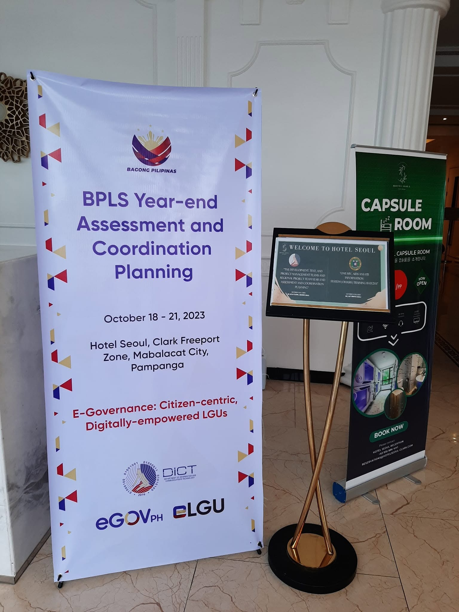
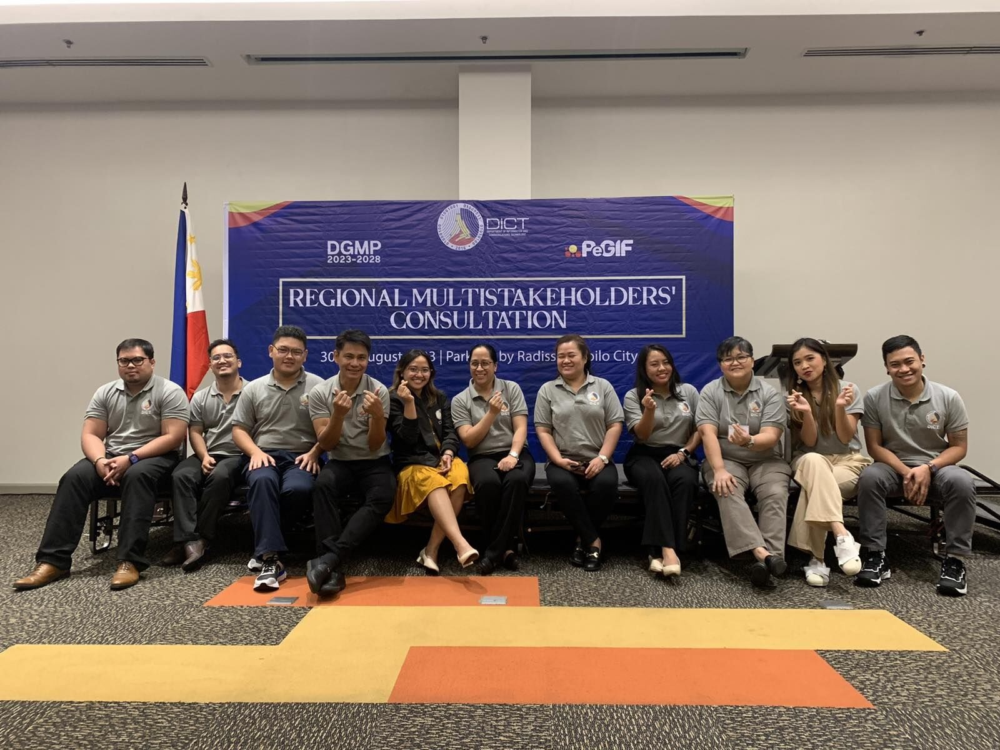
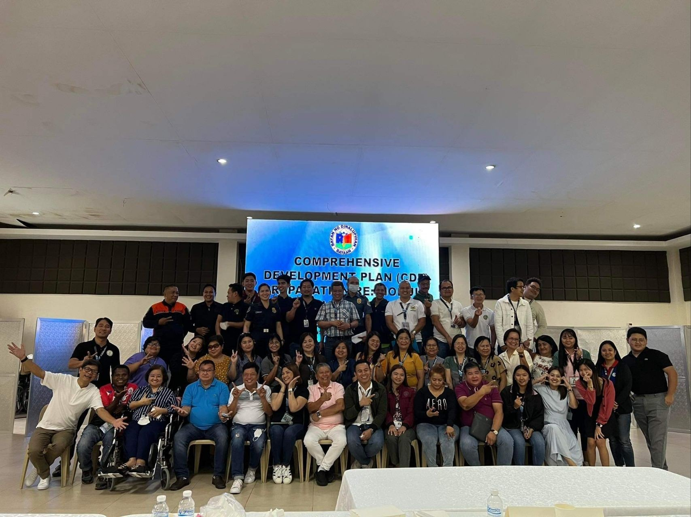
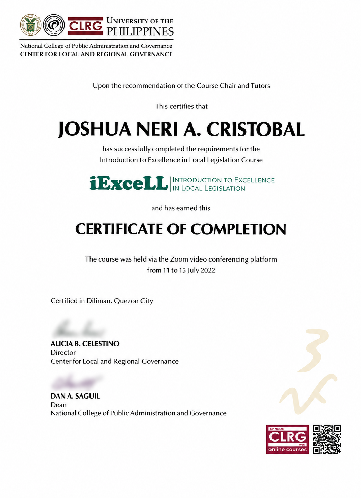
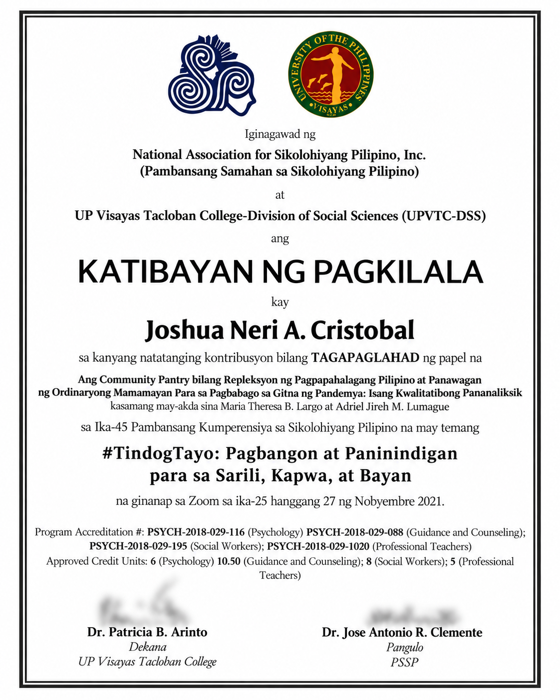
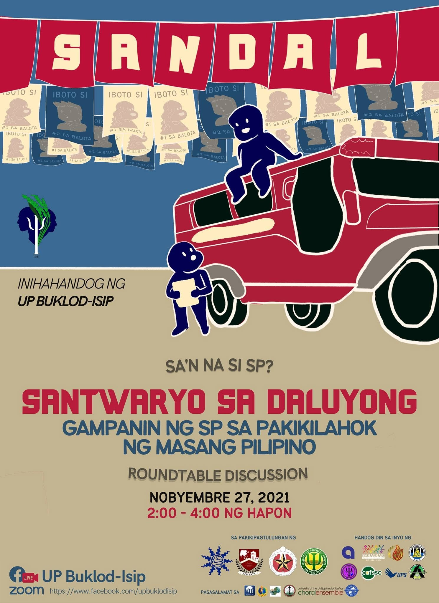

Inquiry
What becomes visible when the question is strong enough to unsettle the first answer, including the one everyone already knows?
Renaissance · Creativity in practice
A space where questions are allowed to change, evidence can complicate an assumption, and ideas become more useful when perspectives, places, records, institutions, and public conversations are allowed to speak back.
Renaissance
Research begins with curiosity, but its value comes from allowing evidence to push back. A useful question can expose assumptions, reveal patterns, and sometimes make the original framing impossible to keep.
Public conversation introduces another kind of test. An idea developed in one room, institution, discipline, generation, geography, or inherited public story encounters people and records that see the problem from somewhere else.
Through Creativity, this becomes Renaissance: not defending the first answer more elegantly, but creating enough room for evidence, perspective, place, and historical scrutiny to produce a better one.
What becomes visible when the question is strong enough to unsettle the first answer, including the one everyone already knows?
What changes when observation, data, documents, or lived reality refuses to support what we expected?
How do context, generation, geography, language, memory, and experience change what the same evidence can mean?
What happens when people, places, or records outside the original frame are allowed to question, extend, or reframe the idea?
From research to conversation
Research and public conversation are connected by the same discipline: a willingness to revise. Evidence can reveal that an assumption is weak. Other people can reveal that the evidence itself is incomplete, differently experienced, or interpreted from a position we had not considered. Historical records can reveal that a familiar public story deserves another look.
Listening adds another layer. A useful conversation does not simply collect viewpoints. It looks for patterns across them, asks the harder follow-up when something does not hold together, and keeps enough composure for disagreement to remain productive.
That is why perspective matters as much as participation. Being invited into a planning process does not make one person representative of everyone. Bringing a national strategy into a region does not make one location representative of the whole country. A story repeated for generations does not become documentary proof simply because it is familiar. And a political discussion does not become useful merely because many people are speaking.
Renaissance happens when those limits become visible and are treated as reasons to keep thinking rather than reasons to defend the original frame.
01 · Public Conversation
Arranged from newest to oldest, these cases document moments when ideas had to leave the page and meet other people: through coordination, consultation, representation, legislation, facilitation, and scholarly exchange.

Leading the organization of a national BPLS planning activity became a lesson in coordination, distributed responsibility, program design, and stewardship of public resources across 17 regional offices.
Read case →
A regional consultation in Iloilo became a lesson in geography: national digital transformation should make distance less decisive in determining what Filipinos can access and participate in.
Read case →
A formal youth-sector role became a reflection on evidence, representation, and Plato's Allegory of the Cave: every perspective can reveal something without becoming the whole picture.
Read case →
From a municipal-library capstone to a later Foundation Day resolution, legislative drafting became a lesson in how records, public memory, and accepted truths should remain open to scrutiny.
Read case →
A qualitative study of community pantries moved from manuscript to scholarly conversation, turning an everyday social phenomenon into a question about Filipino values, solidarity, and calls for change.
Read case →
Organizing and co-facilitating a roundtable on political behavior became a lesson in listening: recognizing patterns across political science and psychology, asking harder questions with composure, and protecting independent judgment.
Read case →02 · Research Manuscripts
These summaries document selected research work I completed or contributed to without reproducing full collaborative manuscripts. Each summary makes the research question, method, contribution, and scholarly context visible while respecting co-authorship, publication status, and future open-access options.
Additional manuscript summaries can be added here as records are reviewed. Full texts can later be linked when co-author consent and publication or repository terms allow appropriate open access.
Creativity → Renaissance
Return to Work to see how Character, Creativity, and Community become Reflections, Renaissance, and Resistance through engagement.
Explore Renaissance →